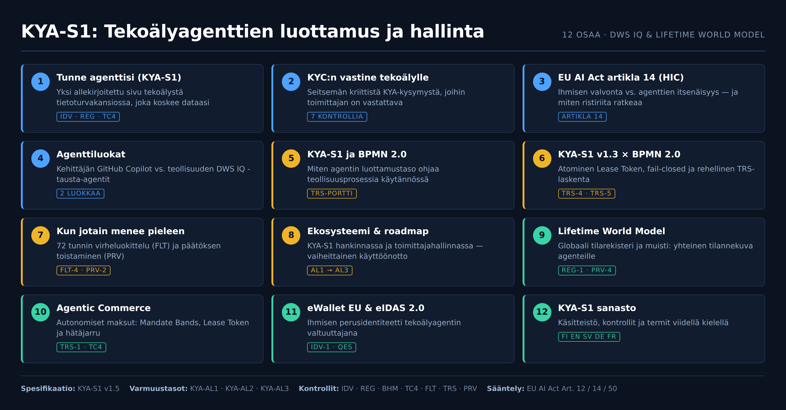

Lifetime World Model (LWM) — Globaali tilarekisteri ja muisti
8. elokuuta 2026 · Risto Anton Päärni · Espoo

Johdanto: Älykäs moottori tarvitsee maailmanmallin
Kun yhdistetään DWS IQ -automaatio-organisaatio (dws10.com) ja Lifetime World Model (LWM), luodaan teollisuudelle jotain kouriintuntuvan tehokasta: suorituskykyiset tausta-agentit yhdistettynä aukottomasti hallittuun ja todennettavaan maailmantilaan.
Pelkkä tekoälyagentti (kuten DWS IQ Skilled Agent) on vain “älykäs moottori”. Se tarvitsee toimiakseen maailmanmallin (World Model) — yhtenäisen tilannekuvan siitä, mikä on järjestelmien tila, kuka tekee mitä, millä valtuuksilla ja mitä seurauksia teoilla on.
Synergia: DWS IQ Engine + Lifetime World Model
- DWS IQ Engine (dws10.com): Toimii suorittavana kätenä. Se tuo erikoistuneet tausta-agentit (Skilled Agents), jotka yhdistävät dataa, ajavat työnkulkuja ja suorittavat teollisia taustaprosesseja.
- Lifetime World Model (LWM): Toimii valvovana ja muistavana aivokuorena. Se pitää yllä järjestelmän reaaliaikaista tilannekuvaa, KYA-S1-tunnistusta (IDV), elävää luottamuspistettä (TRS) ja päätöksentekohistoriaa (PRV).
Prosessimallit ja spesifikaatiot toimivat tässä siltana: ne kääntävät liiketoiminnan ja tuotannon tarpeet kielelle, jota sekä ihminen, DWS IQ -agentit että Lifetime World Model ymmärtävät.
Maailmanmallin kytkentä KYA-S1-kontrolleihin
[ DWS IQ Agent ] ──(Suorittaa teon)──> [ Lifetime World Model (LWM) ]
│
┌─────────────────────────┼─────────────────────────┐
▼ ▼ ▼
[ REG-1 Registry ] [ TRS Trust State ] [ PRV-2/4 Replay ]
Reaaliaikainen Elävä luottamus- Cryptografinen
agenttirekisteri ja riskipisteytys auditointijälki1. REG-1 — Reaaliaikainen agenttirekisteri World Model ylläpitää ajantasaista rekisteriä jokaisesta aktiivisesta agentista: mihin ihmiseen se on sidottu (IDV), mikä on sen kyvykkyysmanifesti (REG-2) ja missä IP/Edge-osoitteessa se ajaa koodia. Reuna-alueen laitteet (NVIDIA Jetson / DGX Spark) synkronoivat tilansa LWM-rekisteriin viiveettömästi.
2. TRS-3 — Luottamustilan muisti World Model ei tallenna vain lopullista päätöstä, vaan se pitää kirjaa TRS-pistemäärän kehityksestä ja poikkeamasakoista (Δ). Jokainen pistemuutos lokitetaan syy-seuraussuhteineen, mikä mahdollistaa proaktiivisen suojaustoiminnan ennen kuin pisteet putoavat kriittisen kynnyksen alle.
3. PRV-2/4 — Päätöksen ja ihmisohjauksen toistettavuus Kun agentti suorittaa tehtävän (tai ihminen kuittaa poikkeaman HIC Dashboardilta), LWM tallentaa tilasta kryptografisen vedoksen:
- Syötteet ja järjestelmäkehotteet
- Käytetyn Lease Tokenin (TRS-4)
- Ihmisoperaattorin identiteetin ja annetun perustelun (PRV-4)
Tämä mahdollistaa aukottoman PRV-2 Replayn: päätöksentekoketju voidaan ajaa uudelleen samat syötteet ja reunaehdot todentaen vuosienkin päästä.
Yhteenveto
Ilman maailmanmallia tekoälyagentit ovat siiloutuneita pisteratkaisuja. Lifetime World Model (LWM) antaa DWS IQ -agenteille yhteisen muistin, yhteisen tilannekuvan ja aukottoman auditointiselkärangan — vastaten suoraan EU AI Actin artiklan 12 ja 14 tiukimpiin vaatimuksiin.
Katso sarjan muut osat
- 1Tunne agenttisi (KYA-S1)Yksi allekirjoitettu sivu tietoturvakansiossa
- 2KYC:n vastine tekoälylleSeitsemän kriittistä KYA-kysymystä
- 3EU AI Act artikla 14 (HIC)Ihmisen valvonta vs. agenttien itsenäisyys
- 4AgenttiluokatCopilot vs. teollisuuden tausta-agentit
- 5KYA-S1 ja BPMN 2.0Luottamustaso ohjaa teollisuusprosessia
- 6KYA-S1 v1.3 × BPMN 2.0Atominen Lease Token ja fail-closed
- 7Kun jotain menee pieleen72 tunnin virheluokittelu ja päätöksen toistaminen
- 8Ekosysteemi & roadmapVaiheittainen käyttöönotto hankinnassa
- 9Lifetime World ModelGlobaali tilarekisteri ja muisti
- 10Agentic CommerceAutonomiset maksut ja hätäjarru
- 11eWallet EU & eIDAS 2.0Ihmisen perusidentiteetti valtuuttajana
- 12KYA-S1 sanastoKäsitteistö ja termit viidellä kielellä
Risto Anton Päärni
Perustaja & toimitusjohtaja, Lifetime Oy
Päätoimittaja, Lifetime Scope Journal